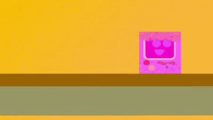

What are the basics of the game?
These fundamental core mechanics may look straightforward at first glance, but navigating them flawlessly requires absolute precision. Don't let the simplicity fool you!
The Standard Block
The classic, reliable black block. It stays firmly in place, serving as your primary foundation for safe platforming and building momentum!
The Jump Block

Stepping onto a Jump Block launches Lil Robo high into the air. The ultimate peak of your launch depends heavily on your active gravity state, making it a key tool for vertical navigation.
The Moving Block

This platform travels back and forth along a fixed path. Hop aboard so you can cross massive gaps safely!
Checkpoints


Flags dictate where you respawn after you die. They operate under three distinct states:
- Yellow Flag: An inactive checkpoint waiting to be claimed.
- Green Flag: Your currently active checkpoint. This marks your exact respawn coordinate if you die.
- Grey Flag: A depleted checkpoint. This indicates you have moved on to a later spawn location, meaning this flag can no longer be reused.
Teleporters


Instantly shifts your position across the map. Step into the entry portal to instantly travel towards the corresponding end portal.
Quicksand

Be careful when you stand on quicksand and make sure to balance yourself around it wisely! If you do not react quickly, you can get sucked into it unless you jump fast enough.